The Search button in the top left corner will toggle the search component. Toggling Show/hide will clear the search query when hiding.
The Timeline button next to the Search button will toggle the timeline: Toggling Show/hide will clear timeline filter when hiding.
When both Search and Timeline are hidden, all Search and Timeline components are hidden:
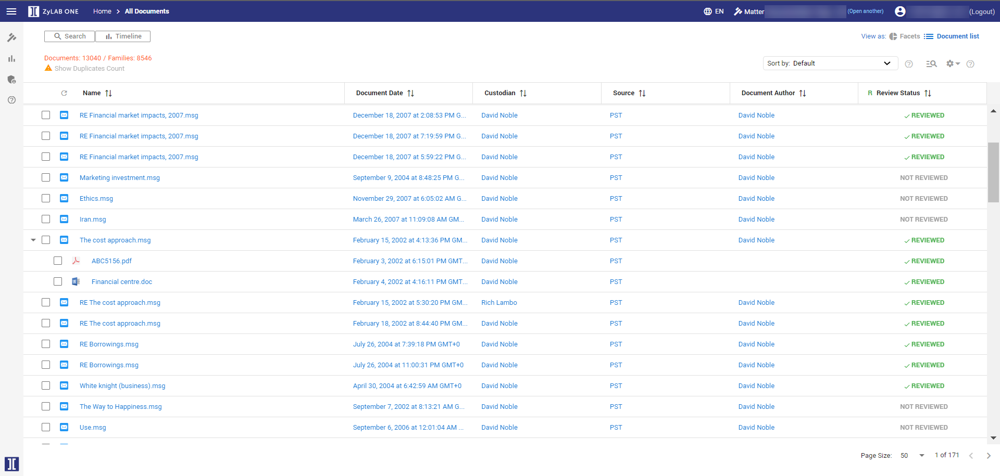
Use the arrows to collapse/expand either the Search or Timeline options, without losing your query/filter:
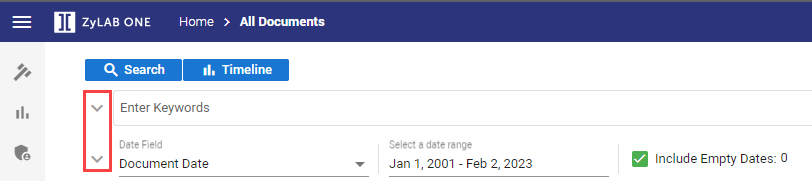
By default, the Document Date field is shown. You can select any other date field present in your matter.
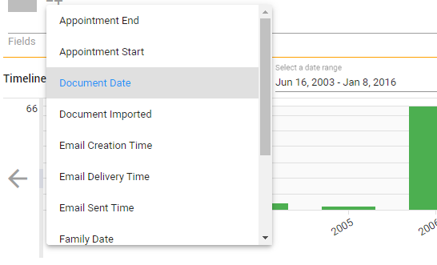
Dates will be aggregated per year/quarter/month/week and day. You will see the distribution of the related documents in the defined date range.
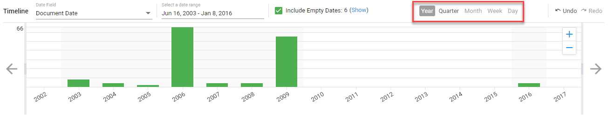
Move your mouse over the bars to see the number of documents in those sets. The same documents will be present in the facets/result list.

Filer by dragging the left/right side or zoom in by selecting a position on the timeline. You can also zoom in and zoom out via the buttons. Results will be updated in real-time. The executed filter/zoom is reflected in the breadcrumbs.
 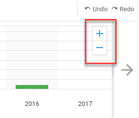
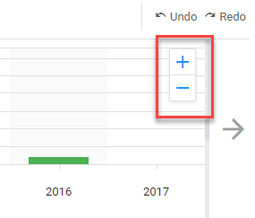
Show/Hide duplicates count. Filter out the duplicates (via the eye icons).

Scroll to the left or right of the timeline, to move quickly to documents not far up or down the current time frame.
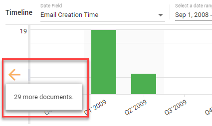
If a document does not have a date, it will not be shown in the results. Therefore, we included an option to include these documents with so-called empty dates. By default, this option is enabled. When turned off, documents without a date will be excluded from the results.
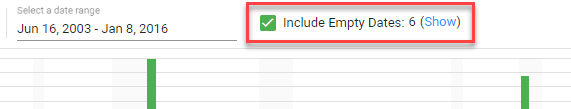
It is also possible to switch to the documents that have no date. This allows you to review only the documents without a date. Click Show.
Select Undo or Redo to go back or forth one step.
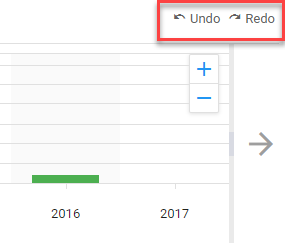
When you remove the filter entirely (x) you return to the full set of documents.
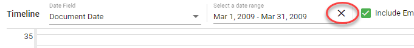
The Timeline and the full-text search can be used together. For example, you can search for 2 people sending emails to each other and you will be able to see the time frame in which they sent the most emails or the distribution of their emails to each other over time.
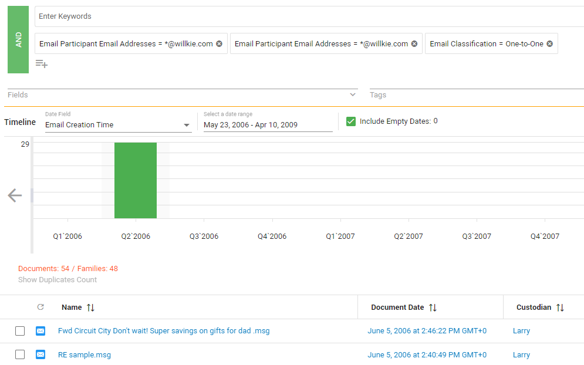